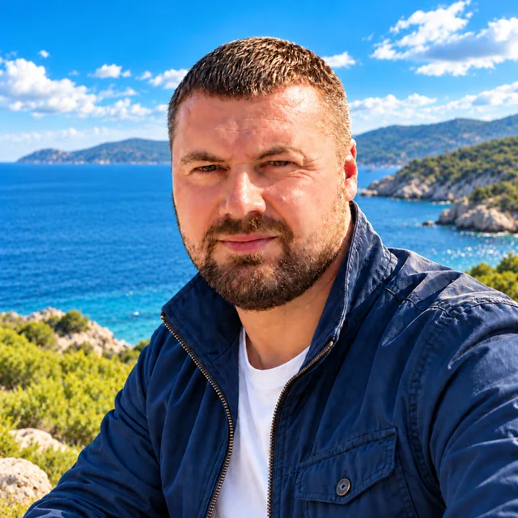

RU

Трейдинг без галстука
Увлечён трейдингом и автоматизацией торговли — создаю то, чем пользуюсь сам. В свободное время предпочитаю самостоятельные путешествия по России и миру на всём, что движется, и даже пешком.

Увлечён трейдингом и автоматизацией торговли — создаю то, чем пользуюсь сам. В свободное время предпочитаю самостоятельные путешествия по России и миру на всём, что движется, и даже пешком.